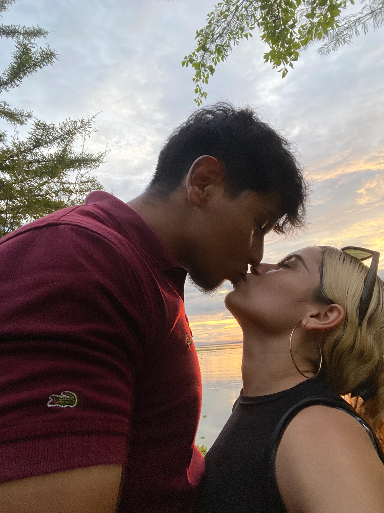

Nuestro primer día juntos
Recuerdo ese día como si hubiera sido ayer, nuestra primera date, y aunque quizás si le contaramos a alguien nos diria que lavar el carro no suene como el plan más romántico, para mí todo si fue muy especial. Llegué con los nervios al 4mil %, las flores en la mano. Cuando te las entregué y vi tu sonrisa, supe que todo valía la pena. jaja sin olvidar nuestros primeros besitos. un poco menos nervioso pero igual, desde mucho antes me hacias muy feliz pero ese día me lo terminaste de confirmar.
Nuestro primer atardecer juntos
Ese día el cielo estaba tan lindo, nos sentamos juntos, hablando de cualquier cosa y de todo a la vez, el tiempo pasa tan rapido cuando estoy con vos, fue el primer atardecer que compartimos, pero lo que más recuerdo no fueron los colores del cielo, sino la forma en que tus ojos brillaban con la luz del sol. Y claro, los besositos ricos que nos dimos, muchos besos que hicieron que ese momento quedara grabado en mi corazón para siempre.
Nuestra date de crepa y cafés
Ese día fue sencillo, pero siempre bonito, nos sentamos juntos, mientras compartíamos un café que sabía mejor porque era con vos. escuchandóte sentía que cada palabra tuya hacía que el mundo alrededor desapareciera. Fue una de esas tardes que no cambiaría por nada, porque con vos hasta lo más simple se siente súper genial.
Nuestras dates de gym
Puede que hayan sido muchas, pero cada una de ellas tiene su propio encanto. Desde reírnos mientras intentábamos seguir nuestras rutinas hasta apoyarnos mutuamente para cargar más peso o darnos muchos besos mientras descansábamos, esos momentos siempre me hicieron sentir más conectado con vos. No era solo ir al gym, era pasar tiempo con vos, motivarnos, y demostrar que juntos podemos con cualquier cosa. Esos días me enseñaron que no importa cuántas veces lo hagamos, cada uno es único porque estoy a tu lado, y por ultimo pero no menos importante me encantaba después de salir comernos a besos.

Más dates de atardecer
Todo iba de maravilla, hasta que nos topamos con que no sabíamos como llegar al lago y tuvimos que pasar por beredas donde ni camino había pero al fin de cuentas llegamos, aunque al llegar paso la tragedia que te picaron las hormigas, aunque yo sé que a vos no te hizo tanta gracia, yo no podía dejar de mirarte lo preciosa que estabas mientras te quejabas de haber ido con esa mezcla de enojo y risa algo tan único que solo vos podes tener, puede que no halla salido como lo planeamos, pero yo si lo disfruté demasiado porque estábamos juntos
Y Más dates de atardecer en Azacualpa
Azacualpa siempre fue y será nuestro lugar especial, como si cada atardecer ahí estuviera solo para nosotros. Recuerdo todas las veces que nos quedamos a ver el cielo cambiar de colores, cada una con su propio momento único. la vez que fuimos solo para disfrutar unos nachos juntos, riendo y compartiendo la tarde juntos. o también cuando, sin planearlo, terminamos haciendo matching con nuestros pantalones, creo que ese día entendí aún más cuánto encajamos, incluso en las pequeñas cosas. Fueron muchos momentos, pero todos compartieron algo en común lo genial que es estar con vos en un lugar que siempre me hacía sentir en casa.
Nuestro cuadro de nuestras manos
Ese día fue muy bonito, recuerdo como nos costó elegir que colores íbamos a utilizar tanto que paso días sin que lo hiciéramos, algo simple pero lleno de mucho significado, primero puse yo mi mano dejando mi marca, y luego vos pusiste la tuya encima de la mía dejando marcado y sellando nuestra historia en ese cuadro. Para mi ese cuadro se convirtió en algo más que en arte, ahora es un recuerdo que vive con vos hasta allá muy lejos, pero es algo que siempre estará grabado en mi corazón.
Sesiones de fotos
Cada sesión de fotos eran bonitos. Y no te lo niego al principio no me gustaban y tampoco era el fan de las fotos. Me acuerdo que no sabia ni que pose hacer ni como ponerme pero lo importante era compartir risas mientras buscábamos el ángulo perfecto, improvisar poses que siempre terminaban en risaso cuando hacia la pose que mejor sé hacer (levantando el dedo pulgar jjajaja), pero lo importante siempre fue disfrutar simplemente de estar juntos. Al final, las fotos eran solo el pretexto, porque lo mejor de esos días era pasar el tiempo contigo, creando recuerdos que se quedaron tanto en las fotos como en mi corazón.